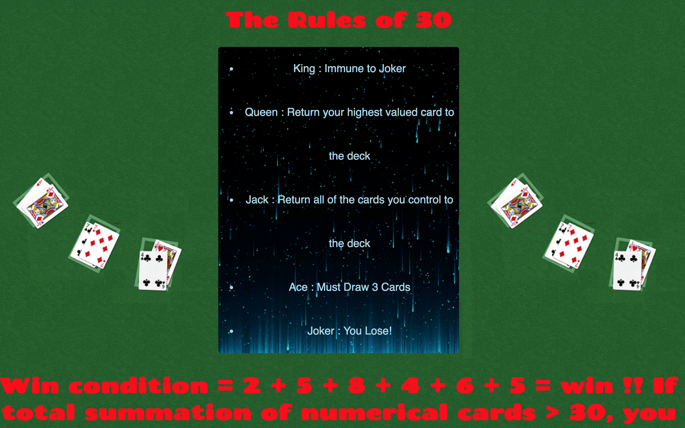

The objective of this card game, Game Of 30
is to gain 30 points by drawing numerical values from 1-9. You start the game by drawing 2 cards from the deck and placing them on he field. Face cards such as King, Queen, and Jack have a value of 10 points. In addition to their point value, these face cards also have an additional card effects. Joker is also played in this game and has its own unique effect. To win the game you must earn 30 points. However, if you earn more than 30 points, for example, you currently have 21 points and draw a face card which has a value of 10 points, you will lose the game. The unique effects of King, Queen, Jack, and Joker are explained in detailed below.
 If a King is drawn, you may draw up to 5 cards from the top of the deck. Out of the 5 cards you can only choose 1 card to set on the field. The rest of the cards are returned to the bottom of the deck and shuffled. Also, the turn this card is drawn, you will gain immunity to the Joker. The effect of King can only be activated once per turn.
If a King is drawn, you may draw up to 5 cards from the top of the deck. Out of the 5 cards you can only choose 1 card to set on the field. The rest of the cards are returned to the bottom of the deck and shuffled. Also, the turn this card is drawn, you will gain immunity to the Joker. The effect of King can only be activated once per turn.
 If a Queen is drawn, you must return the the highest valued card that you currently control back to the deck. The deck is then shuffled. The Queen will be worth 0 points inside the games while the other face cards retain their value. Unlike the King, the effect of the Queen can be activated more than once per turn,if it is drawn multiple times in a single turn.
If a Queen is drawn, you must return the the highest valued card that you currently control back to the deck. The deck is then shuffled. The Queen will be worth 0 points inside the games while the other face cards retain their value. Unlike the King, the effect of the Queen can be activated more than once per turn,if it is drawn multiple times in a single turn.
 If a Jack is drawn you must return all of the cards you control on the field and in your hand to the deck. The deck is then shuffled. After the deck is shuffled, you may draw up to the same amount of cards you have returned from the field and must place them directly on the field. The effect of Jack can be activated only once per turn.
If a Jack is drawn you must return all of the cards you control on the field and in your hand to the deck. The deck is then shuffled. After the deck is shuffled, you may draw up to the same amount of cards you have returned from the field and must place them directly on the field. The effect of Jack can be activated only once per turn.
 Along with the face cards, there are only two non numerical cards that have effects. The first of these cards is Ace. The Ace card can be treated as 1 point or as 11. Once the selection of the points have been choose , it cannnot be undone, so choose carefully! The Ace card is placed into the field zone unlike the face cards which are placed in the face zone. The effect of Ace is to draw 3 cards. However, you may choose to discard up to 3 cards from your hand and field and replace them with the cards you have drawn. The effect of Ace can be activated more than once per turn.
Along with the face cards, there are only two non numerical cards that have effects. The first of these cards is Ace. The Ace card can be treated as 1 point or as 11. Once the selection of the points have been choose , it cannnot be undone, so choose carefully! The Ace card is placed into the field zone unlike the face cards which are placed in the face zone. The effect of Ace is to draw 3 cards. However, you may choose to discard up to 3 cards from your hand and field and replace them with the cards you have drawn. The effect of Ace can be activated more than once per turn.
 The second of these cards is the Joker. The effect of this card is catostrophic. If a Joker is drawn, then you will lose the game, unless a King was draw the previous turn. The King is able to give the player immunity from the Joker for 1 turn. Don't worry though, the chances of drawing the Joker is only 4% . Good Luck!
The second of these cards is the Joker. The effect of this card is catostrophic. If a Joker is drawn, then you will lose the game, unless a King was draw the previous turn. The King is able to give the player immunity from the Joker for 1 turn. Don't worry though, the chances of drawing the Joker is only 4% . Good Luck!
Below is the rules page that can be accessed in the game. It is a concise rule page.
